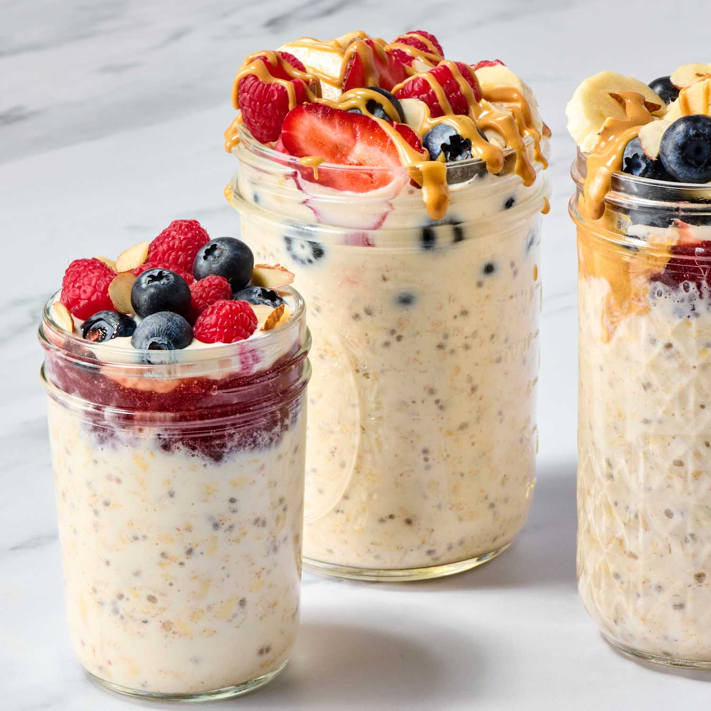

Overnight Oats Recipe
Ingredients:
- ½ cup rolled oats
- ½ cup milk (dairy or plant-based)
- ¼ cup Greek yogurt (optional, for creaminess)
- 1 tablespoon chia seeds
- 1 tablespoon honey or maple syrup
- ½ teaspoon vanilla extract
- ½ cup fresh fruit (bananas, berries, or apples)
- ¼ cup nuts or granola (for topping)
Instructions:
- In a jar or bowl, mix oats, milk, yogurt, chia seeds, sweetener, and vanilla.
- Stir well and seal the container.
- Refrigerate overnight or at least 6 hours.
- Before serving, add fresh fruit and crunchy toppings.
- Enjoy cold or slightly warmed up!